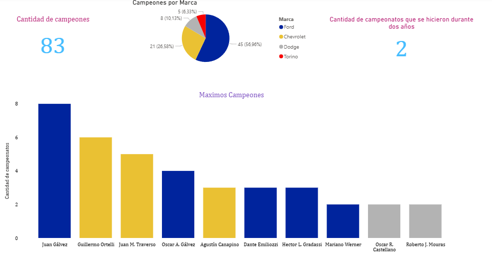

📊 Análisis de Datos
👥 Dashboard de RRHH
Creado para visualizar la cantidad de empleados de una empresa en América Latina, segmentados por país y área de trabajo.


🌐 Dashboard ONU
Creado para visualizar datos particulares de todos los países miembros de la ONU. Incluye análisis, comparación y visualización de indicadores globales.


🟣 Dashboard de Provincia de Buenos Aires
Dashboard creado para visualizar datos de la Provincia de Buenos Aires, incluyendo densidad poblacional y afiliación política de cada intendente.


🌍 Dashboard de territorios no autónomos
Relevamiento visual y analítico sobre los territorios no autónomos del mundo. Incluye extracción de datos con Python, procesamiento y visualización interactiva.


🏭 Dashboard Industrial
Visualización que muestra la cantidad de pingüinos registrados en las islas Biscoe, Dream y Torgensen.
👁️ Ver captura
🏖️ Dashboard Turismo
Tablero que permite visualizar la cantidad de viajes turísticos realizados por Europa.
👁️ Ver captura
🚗 Dashboard Motores Honda
Tablero creado para visualizar la producción de motores Honda en los últimos años.
👁️ Ver captura
🎬 Dashboard Películas
Análisis que muestra la producción de películas y series, destacando principalmente los datos relacionados con el territorio argentino.
👁️ Ver captura
🐧 Dashboard Pingüinos
Tablero creado para demostrar la cantidad de pingüinos registrados en las islas Biscoe, Dream y Torgensen.
👁️ Ver captura
🏎️ Dashboard de Campeones del TC
Dashboard realizado para mostrar datos historicos del Turismo Carerreta hasta el año 2024.
👁️ Ver capturas